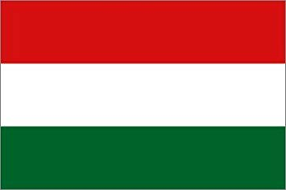
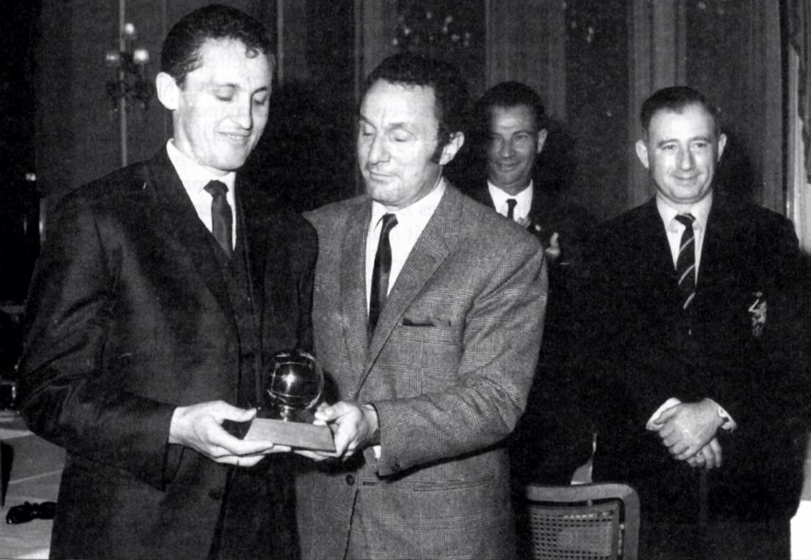
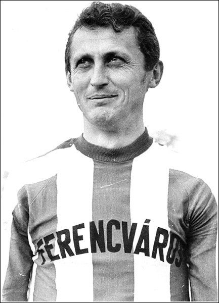

 Florian ALBERT - 1967

-
Florian Albert
, couronné à une large majorité
Nationalité : Hongroise
Né le : 15 septembre 1941, à Hercegszanto (HON)
Décédé le 31 octobre 2011, à Budapest (Hongrie)
Taille : 1,81
Poids : 72 kg
Poste : milieu
Clubs : Ferencvaros (1952-1974)
Palmarès de joueur : Coupe des Villes de Foire 1965 ; Championnat de Hongrie 1963, 1964, 1967 et 1968 ; Coupe de Hongrie 1972
Bilan en club : 31 buts (1959-1974)
Bilan en équipe nationale : 63 sélections A, 10 buts (1954-1966)
Bilan en phase finale de Coupe du monde : 2 participations, 7 matches, 4 buts (1962-1966)
Palmarès Ballon d'Or : vainqueur en 1967
Carrière d'entraîneur : Benghazi (1975-1976) et Ferencvaros (jeunes, 1976-1977)
Classement du Ballon d’Or France Football 1967 :

Florian Albert (Hongrie / Ferencvaros),
68 pts.
Bobby Charlton (Angleterre / Manchester United),
40 pts.
Jimmy Johnstone (Ecosse / Celtic Glasgow),
39 pts.
Retour à l'accueil